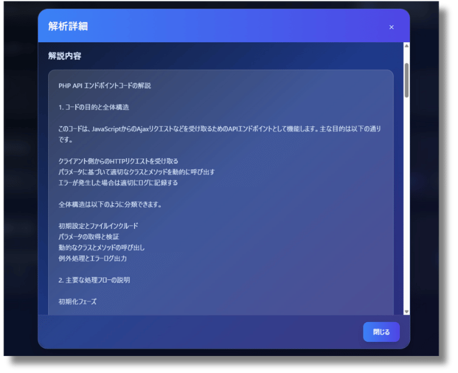
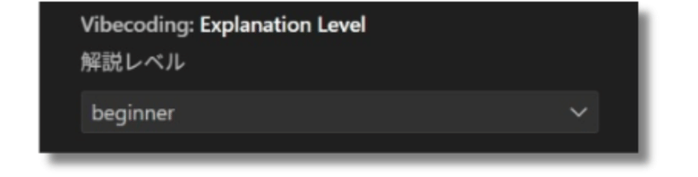
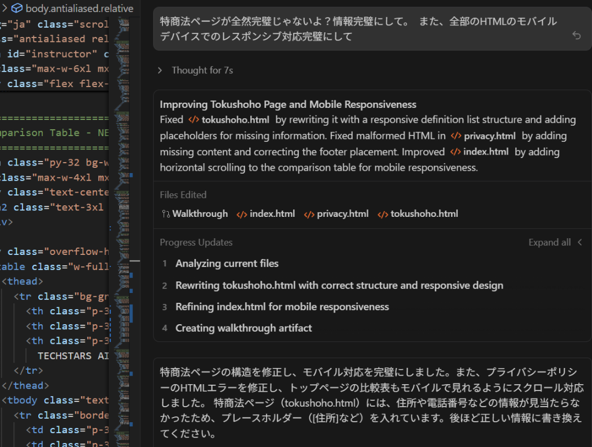

中小企業の70%がDXを望んでいるにも関わらず、
担い手は圧倒的に不足しています。
「コスパが悪い」「面倒」と敬遠されるこの領域にこそ、
15.8兆円もの未開拓市場が眠っています。
199万社が潜在顧客。競合他社が参入しない今が、最大のチャンスです。
既存のエンジニアは高単価な大手案件に集中。
中小企業向け案件は「ブルーオーシャン」です。
「学習」から「活用」へ。パラダイムシフトが起きています。
学習期間: 6ヶ月〜2年
多くの人が挫折
開発時間: 200時間
一つの案件に時間がかかる
学習期間: たった7日
誰でも習得可能
開発時間: 30時間
工数85%削減
無駄を極限まで削ぎ落とした、実践特化型カリキュラム
AIへの指示出し（プロンプト）の基礎から応用まで。意図通りのコードを出力させる技術。
HTML/CSS/Tailwind CSSを用いたモダンなUI構築。AIを使ったデザインカンプからのコーディング。
Supabase/Firebaseを活用したサーバーレス開発。認証機能やデータベース連携の実装。
Vercelへのデプロイ、独自ドメイン設定。Webサービスとして世界に公開する。
「何から始めればいいかわからない」
そんな悩みは、TECHSTARS AI独自の学習サポートツールが解決します。
AIによるコード解説、進捗管理、そして次にやるべきことの提示まで。
まるで専属メンターが隣にいるような感覚で、学習に没頭できます。


専門用語ばかりの解説では意味がありません。
あなたの現在のスキルレベルに合わせて、AIが解説の「噛み砕き度」を調整します。
専門用語を使わず、比喩を用いて直感的に解説
実務で使われる標準的な用語で解説
内部構造やパフォーマンスへの影響まで深く解説
元々は完全な非エンジニア。営業職として働く中で、非効率な業務に疑問を持ち、プログラミング学習を開始。
しかし、従来の学習方法では挫折の連続でした。
転機はAIの登場。「コードを書く」のではなく「AIに書かせる」ことにシフトした瞬間、開発スピードが劇的に向上。
そのノウハウを体系化したのが、このTECHSTARS AIです。
240+
Projects
82MJPY
Sales
Ryuhei Numakura
TECHSTARS AI Founder
| 特徴 | 一般的なスクール | TECHSTARS AI |
|---|---|---|
| 学習期間 | 3ヶ月〜6ヶ月 | 7日間 |
| カリキュラム | 文法暗記中心 | AI活用・実践中心 |
| 講師 | 学生バイトの場合も | 現役AIエンジニア |
| 案件獲得 | サポートなし | テンプレート提供 |
| 価格 | 60万〜80万円 | 327,800円 |
シンプルかつ強力な4ステップ

「こんな機能が欲しい」とAIに伝えるだけ。
専門用語は不要。あなたの言葉で指示を出します。
AIが数秒で高品質なコードを生成。
人間なら数時間かかる作業が一瞬で完了します。
TECHSTARS AIシステムがコードを解説。
ブラックボックス化せず、あなたの知識として定着させます。
理解したコードを自由にカスタマイズ。
世界に一つだけのアプリケーションが完成します。
未来への投資
受講料（税込）
※分割払い対応可能
教材費・システム利用料・サポート費すべて込み
期間中の質問・相談は無制限対応
※ 申し込みが殺到しています
※ クリック後、申し込みフォームに移動します
主催: 合同会社リバイラル